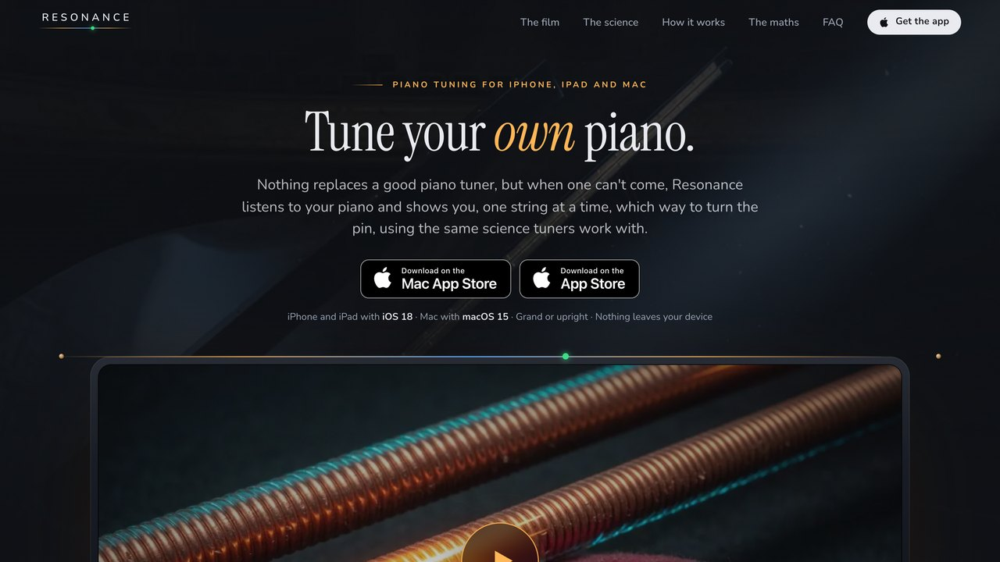

Å kjøpe nettsider, apper eller digital markedsføring i dag for samme pris som før er absurd. Det er også masse muligheter som tidligere var for dyre å begi seg ut på.
Snakk med meg om alt dette.Jobber med nå
> Konsultasjon
Kunde i laksenæringen
- Hva
- Pågått
- Siden mai 2026
- Størrelse
- Overhauling av digital fremvisning, markedsføring og designspråk
- Jeg gjør
- Markedsføringsstrategi og restrukturering
Sammen har vi allerede gjort spennende fremskritt, i stor grad ved hjelp av analyse fra Claude Code.
Ved å laste inn Google Ads-tall fra deres eksisterende byrå, fant vi store besparelser som følge av ineffektivitet i targeting og for høye administrasjonsgebyr. Det var en case hvor ledelsen hadde gitt fullstendig tillit til byrået, og jeg tror ikke jeg vil finne denne type besparelser så enkelt i de fleste bedrifter.
Vi flyttet Google Ads in-house og kuttet kostnaden betraktelig, uten kvalitetstap. Mitt vederlag utgjorde 25% av den årlige besparelsen som følge av høy effektivitet fra AI-bruk. Vinn-vinn!
> Egne prosjekter
Athena
- Hva
- Alarm-app for familier, iPhone og Android
- Pågått
- Siden mai 2026
- Størrelse
- 55 000 linjer Swift, 10 språk
- Jeg gjør
- Idé, design, kode, reklamefilm
Målet mitt med Athena er å redde et liv.
Det er det hele.
Ideen kom fra broren til min brors kone, som fortalte meg umiddelbart hvilken app jeg burde bygge etter jeg sa at jeg bygget apper.
Han hadde blitt ringt av en gammel dame som hadde falt og ligget på baderomsgulvet i flere dager, etternavnet hans starter med A, og han var øverst.
Han sa «du bør bygge en alarm som gjør at det å sjekke inn blir en naturlig del av hverdagen» - og jeg var enig.
Selv om ikke alle eldre bruker en alarm, er det mange nok som gjør det til at det kan hjelpe. Det finnes versjoner av appen fra før, men det kan forbedres på mange måter.
Han eier noe uvisst halve, en idé er en idé, men jeg har priset det kun til server-kostnad, så vi kommer til å tjene om lag 1 krone og 80 øre hver i måneden per familie som bruker dette. Jeg ville gjerne gjort appen gratis, men jeg vil ha mulighet til å nå så mange som mulig uten å måtte subsidiere server-kostnad.
Jeg har lange visjoner for å gjøre den større og gi den mange føtter for branding, men versjon 1 med uttrykket over er snart klar.
Resonance Piano Tuner
- Hva
- Stemme-app for piano, iPhone, iPad, Mac og Android
- Pågått
- Siden september 2026
- Størrelse
- 46 000 linjer Swift
- Jeg gjør
- Idé, design, kode, nettside ↗

Fikk for meg at jeg skulle stemme flygelet til moren min selv.
Gikk litt inn i en mani hvor denne appen ble større og større.
Det funker, men jeg vil gjøre den episk, så vi lar det marinere gradvis.
Meningsfullt prosjekt ettersom jeg er musikkglad.
Stor app – hemmelig
- Hva
iPhone og Android- Pågått
- Siden april 2026
- Størrelse
- 204 000 linjer kode
- Jeg gjør
- Alt
Dette er hovedprosjektet mitt, og jeg har lagt inn mer arbeid enn jeg har gjort tidligere.
Jeg har en «produkt først»-filosofi hvor jeg stiller meg selv et spørsmål langs veien
«Hvis vi kunne fryse tiden, i en million år, hvordan ville vi bygget dette med nåværende teknologi?»
Eksempler er at jeg har egne versjoner basert på hardware, hvor apper ofte sier «det blir for mye arbeid å ta med de gamle telefonene», men jeg tror denne appen vil gjøre godt, og jeg vil nå så mange som mulig, så jeg har bygget om nøkkelfunksjoner for å fungere på tvers av hardware, fra iPhone 8 til 18 Pro Max, hvor jeg ikke degraderer brukeropplevelsen for de med moderne telefoner - som gjør dette til mye arbeid på tvers av iPhone og Android.
Jeg ser ikke etter investorer, men jeg er ute etter konsulent-arbeid for å gi meg runway, og er blitt veldig kyndig i iPhone, variasjon i modeller og så og si alle funksjoner tenkelig.
Målet er å bygge den beste appen i verdenshistorien til det jeg gjør, og jeg tror jeg gjør det.
Dette er ikke en "Uber" eller "Instagram" stor app, ikke noe revolusjonerende., men den er stor å jobbe med.